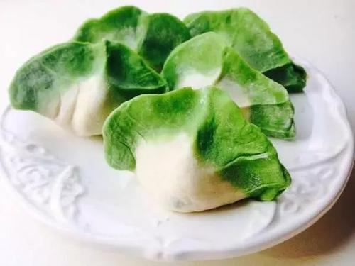
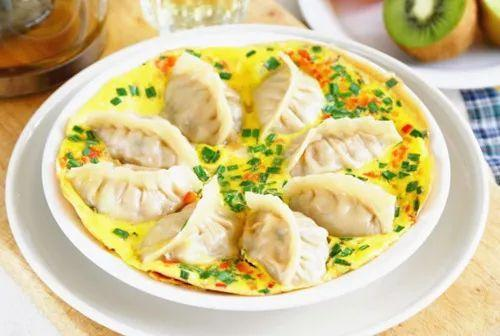
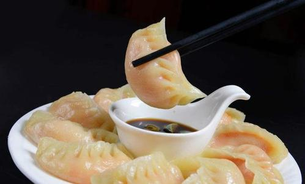
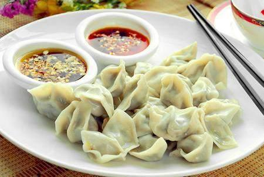
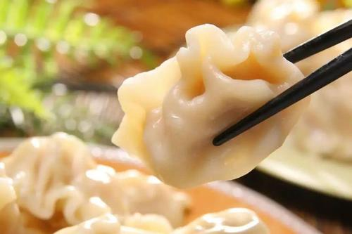

What is dumpling?
more- 
- 
- 
- 
- 
Dumpling, formerly known as “Jiao er” because the shape is similar to ear , is a traditional flour dish of
the
Han nationality. It was invented by Zhongjing Zhang in Nanyang in the Eastern Han Dynasty and was originally
used as a medicine. Dumpling is popular among the Chinese people and is a staple food and local snack in
northern China.
It is also a festival food. There is a proverb: “October
1st, the winter
solstice
is
here,
every
family will eat dumplings.” Dumpling is mostly boiled with dough with stuffing. Because dumpling is made
with
different fillings, it is called different kinds of names. For example: pork and cabbage dumplings, mutton
dumplings, red oil dumplings and so on. There are also many ways to cook dumplings, such as boiling,
steaming
and frying.